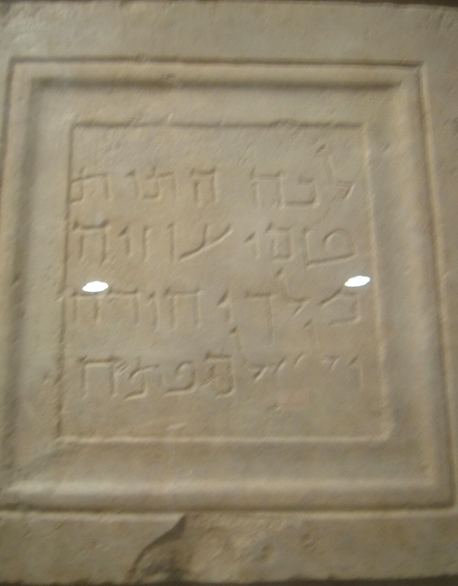

Uzziah Tablet

A stone burial plaque in Aramaic reading, 'Here were brought the bones of Uzziah, king of Judah. Do not open.' It was found in a collection on the Mount of Olives and records the later reburial of King Uzziah's remains during the Second Temple period.
Biblical Significance
Uzziah reigned fifty-two years, was struck with leprosy, and had to be buried separately, exactly as Kings and Chronicles describe. The tablet shows later generations still remembered where his bones lay and handled them with care, linking the divided kingdom's history to living Jerusalem memory.
Interpretations
Scholars broadly accept the tablet as a genuine Second Temple-period reburial inscription for King Uzziah; its Aramaic text and late date mean it records a reburial tradition, not Uzziah’s original burial.